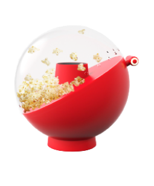
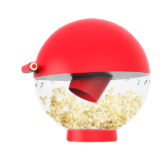
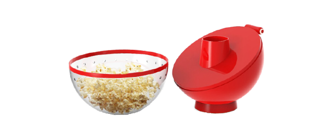
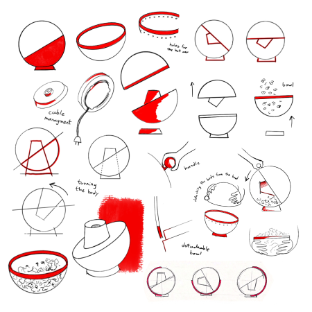
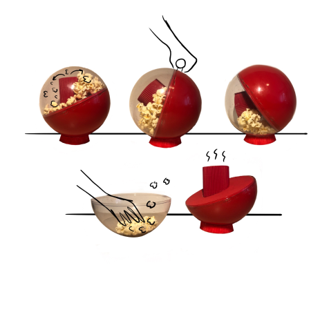
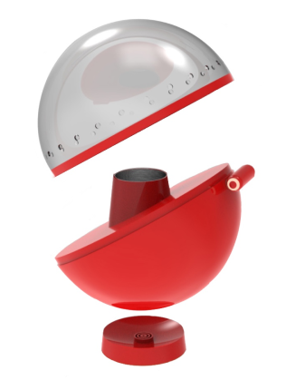
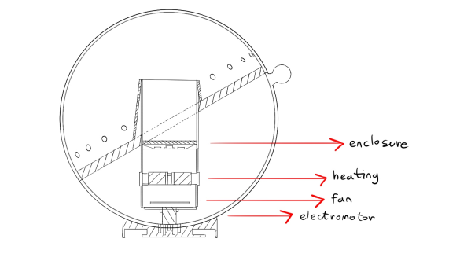
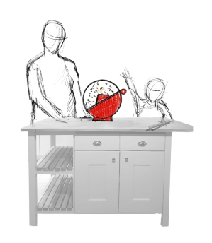
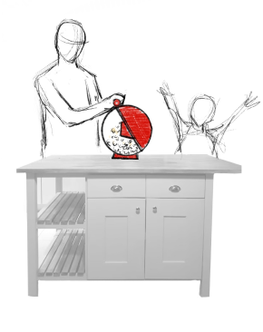
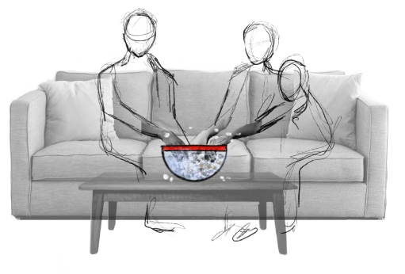

Pook revolutionizes the traditional popcorn-making experience by reimagining classic hot air
circulation
methods. Diverging from conventional designs, Pook integrates a unique bowl directly into the
device,
enabling both seamless popcorn preparation and consumption without the risk of kernels escaping.
Initiating
the process is effortlessly managed through a user-friendly handle on the machine.
Upon
completion, the
handle facilitates the detachment of the bowl, transforming it into a convenient vessel for
enjoying
the
freshly popped popcorn. The distinctive shape and vibrant red hue of Pook convey a harmonious
blend
of
contemporary aesthetics and retro charm, paying homage to the rich history of popcorn
consumption.
This
innovative device not only elevates the act of preparing a timeless snack but also fosters an
unforgettable
experience. By creating an emotional connection with the popcorn maker, Pook transforms the
mundane
into a
moment of delight, making every popcorn session a memorable affair.
Mentors: Andrea Hercog, Zlatko Kapetanović
Industrial design 4
2021.




Requirements for design:
1. Designing a switch that is easy to press (press with one finger).
2. Solving the problem of cable storage.
3. Closing the popcorn, prevent them from flying everywhere.
4. Removing the spoon.
5. Reducing the noise during device operation.
6. Enabling the air to circulate, it can blow upwards if there is something preventing the popcorn from falling out.

1. Designing a switch that is easy to press (press with one finger).
2. Solving the problem of cable storage.
3. Closing the popcorn, prevent them from flying everywhere.
4. Removing the spoon.
5. Reducing the noise during device operation.
6. Enabling the air to circulate, it can blow upwards if there is something preventing the popcorn from falling out.


Eating popcorn is associated with fun and togetherness. Why shouldn’t the experience of their
preparation
also evoke a sense of community?


